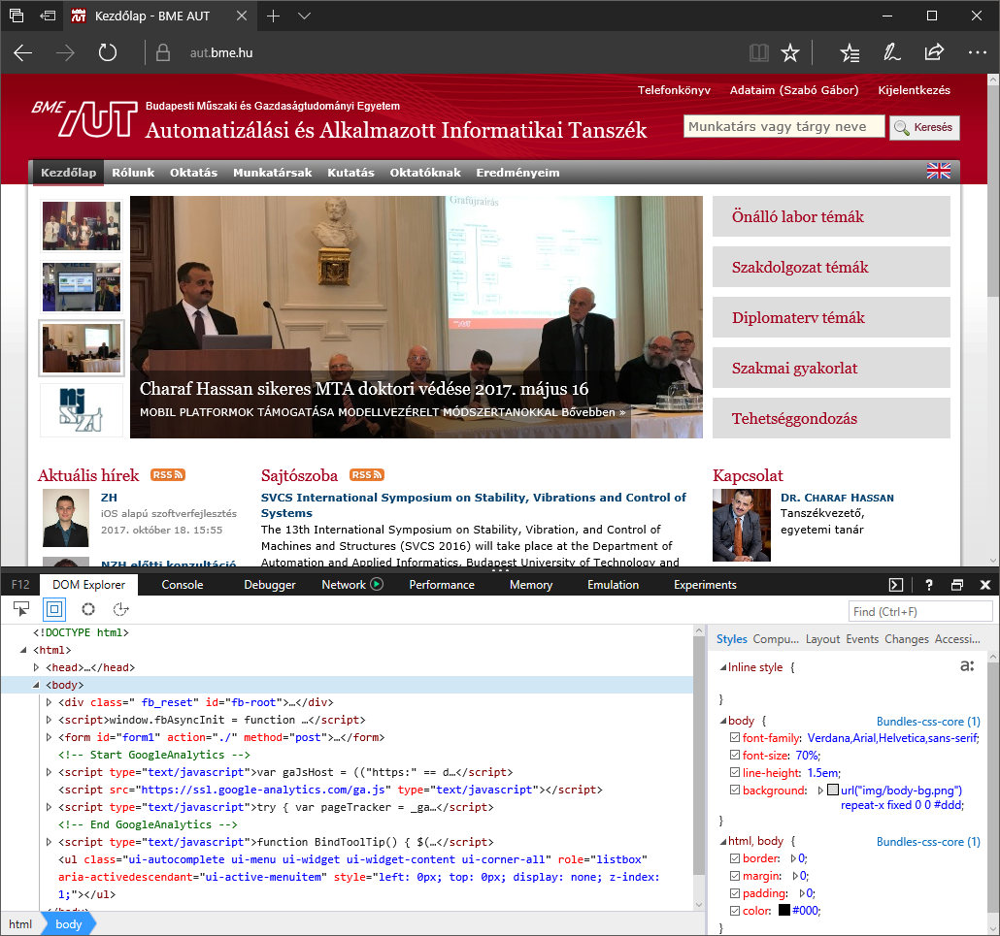

Labor 08 - HTTP, HTML¶
Bevezetés¶
A laborok során a hallgatók laborvezetői segítséggel, majd önállóan végeznek feladatokat a webes technológiák gyakorlati megismerése érdekében.
A félév során felhasznált eszközök:
- Telerik Fiddler,
- használható az OS X / Linux verzión is futtatható Fiddler Everywhere verzió is, ekkor viszont a különbségekből fakadó esetleges kellemetlenségekért nem vállalunk felelősséget,
- közvetlen link: FiddlerSetup.exe,
- webböngészők beépített hibakereső eszközei,
- Visual Studio Code kódszerkesztő alkalmazás,
- otthoni vagy egyéni munkavégzéshez használható bármilyen más kódszerkesztő vagy fejlesztőkörnyezet,
- npm, a NodeJS csomagkezelője,
- a http-server npm csomag, ami egy nagyon egyszerű, fejlesztési célra szánt HTTP kiszolgáló
- ha a gépen nincsen telepítve a http-server, azt az
npm install -g http-serverparanccsal lehet telepíteni a NodeJS telepítését követően, majd parancssorban ahttp-serverparancs kiadásával egy új HTTP szerver indul, ami az aktuális munkamappa tartalmát szolgálja ki.
Az npm parancs futtatásához telepített NodeJS-re is szükség van.
Amelyik laboron ezeken felül további eszközökre lesz szükség, ott a labor bevezetőjében ezt jelezzük.
Előkészület¶
A feladatok megoldása során ne felejtsd el követni a feladat beadás folyamatát Github.
Git repository létrehozása és letöltése¶
- Moodle-ben keresd meg a laborhoz tartozó meghívó URL-jét és annak segítségével hozd létre a saját repository-dat.
- Várd meg, míg elkészül a repository, majd checkout-old ki.
- Egyetemi laborokban, ha a checkout során nem kér a rendszer felhasználónevet és jelszót, és nem sikerül a checkout, akkor valószínűleg a gépen korábban megjegyzett felhasználónévvel próbálkozott a rendszer. Először töröld ki a mentett belépési adatokat (lásd itt), és próbáld újra.
- Hozz létre egy új ágat
megoldasnéven, és ezen az ágon dolgozz. - A neptun.txt fájlba írd bele a Neptun kódodat. A fájlban semmi más ne szerepeljen, csak egyetlen sorban a Neptun kód 6 karaktere.
Feladat 1 - HTTP hibakeresés¶
A Fiddler a Telerik cég ingyenes terméke, az egyik leggyakrabban használt webes hibakereső (debugger) eszköz. A Fiddler egy közbeékelődéses „támadást” (man in the middle attack) játszik el a gazda számítógépen azáltal, hogy proxy-ként viselkedik. A számítógépről kifelé induló HTTP kéréseinket elkapja, naplózza azokat feldolgozás és a felületen történő megjelenítés céljából, majd elküldi az eredeti címzett felé. Ugyanezt a sorozatot játssza el a visszairányban is, amikor a gépünk a hálózatról kap adatot.
- Indítsuk el a Fiddler alkalmazást!
- Ne zárjuk be a Fiddler alkalmazást! Indítsuk el a Windows beépített proxy beállító felületét!
- Indítsuk el a Windows beépített proxy beállító felületét! A Windows billentyűt nyomjuk le, a Start menü megnyílása után gépeljük be: "proxy", és nyissuk meg a proxybeállításokat!
BEADANDÓ (0.5 pont)
Másoljon be egy képernyőképet arról f1a.png néven, hogyan módosítja a Fiddler a proxy beállításokat a Windows proxy beállításai között és a Telerik Fiddler Options > Connections fülön!
Ha bezárjuk a Fiddlert, láthatjuk, hogy visszaállítja a proxybeállításokat a kiinduló állapotra. Indítsuk el ismét, hogy meg tudjuk vizsgálni a hálózati forgalmat!
Mielőtt használjuk az eszközt, szükséges lehet a HTTPS forgalom feloldása, amihez egy egyedi tanúsítványt kell telepítenünk a gépünkre. Ezt a Tools -> Options -> HTTPS lehetőségnél kezdeményezhetjük.
A Fiddler futása közben indítsunk el egy böngészőt, és navigáljunk a https://www.aut.bme.hu címre (figyelem, pontosan írjuk/másoljuk be!)! Tekintsük át a program felületét az így keletkező HTTP kérések alapján!
A Fiddler alapvető felépítése az alábbi: 
- HTTP kérések időrendi listája: itt látjuk, hogy milyen kéréseink mentek ki a hálózatra. A protokoll HTTP vagy HTTPS lehet, a Result a válaszüzenetben érkező HTTP státuszkódot jelzi. A Body mezőben láthatjuk, hogy a válasz hány bájt méretű volt. A bal oldali listában bármely kérést kiválasztva annak részleteit jobb oldalon láthatjuk.
- Jobb egérgombbal a lista elemein lehetőségünk van azok újrajátszására.
- Lehetőségünk van a listában aktív szűrő beállítására pl. alkalmazás (process ID) vagy host alapján.
- A jobb oldali fülön alapértelmezés szerint az Inspectors fül van kiválasztva, ami az aktuálisan kiválasztott HTTP kérés-válasz párost részletezi. A felső panel a kimenő kérés panelje. A tabok során váltogatva az üzenetet különböző formázásokkal is megvizsgálhatjuk, a fontosabbak:
- Headers: itt láthatjuk a HTTP fejléc legfontosabb elemeit, úgy mint a HTTP igét és protokollt, csoportokba szervezve a HTTP üzenet tartalmát.
- TextView: szöveges nézet.
- WebForms: űrlapok küldése esetén a paraméterek nevét és értékét tartalmazza.
- Cookies: a felküldött/fogadott sütik megjelenítése.
- Raw: a nyers HTTP üzenet megjelenítése.
- JSON/XML: az üzenet megjelenítése JSON/XML objektumokként (csak megfelelő formátum esetén).
- A jobb oldali panelen az **Inspector**t választva az alsó részen a válaszból kinyerhető adatok találhatók meg, ezek jelentős része analóg a kérés formátumával és a Request panelen található adatokkal.
- Egy fontos eszköz lehet még számunkra a Composer, amellyel teljes HTTP kérést tudunk összeállítani és elküldeni.
Kérések vizsgálata¶
Elemezzük a böngésző által generált kéréseket!
A böngészőbe a weboldal címének beírása után egy HTTP kérés indult meg a www.aut.bme.hu szerver irányába (esetleg HTTP átirányítást követően, ami a www nélküli variáns vagy a nem HTTPS variáns esetén a megfelelő oldalra irányít át). A Fiddlerben megvizsgálva következtetéseket vonhatunk le a kérés-válasz adatai alapján.
Laborgépeken elképzelhető, hogy a tanúsítvány nincsen telepítve és nincsen jogunk a telepítéshez. Ebben az esetben haladjunk a laborral a leírtaknak megfelelően, de minden esetben a HTTPS URL-ek helyett HTTP-t használjunk! A válasz ezekben az esetekben egy átirányítás lesz a szokásos 200 OK válasz helyett.
Az első kérés az általunk beírt webcímre került kiküldésre az alábbi formában:
GET https://www.aut.bme.hu/ HTTP/1.1
Accept: text/html, application/xhtml+xml, image/jxr, */*
Accept-Language: en-US,en;q=0.7,hu;q=0.3
User-Agent: Mozilla/5.0 (Windows NT 10.0; Win64; x64) AppleWebKit/537.36 (KHTML, like Gecko) Chrome/52.0.2743.116 Safari/537.36 Edge/15.15063
Accept-Encoding: gzip, deflate
Host: www.aut.bme.hu
Connection: Keep-Alive
- A kérés GET igét használt, ezért nem tartozik hozzá törzs (body) a küldött HTTP üzenetben.
- A HTTP üzenet egyszerű szöveges formátumú, ember által is olvasható.
- A böngésző kulcs-érték párok formájában további adatokat küldött a szerver felé, mint pl. a böngészőt azonosító karakterláncot (User-Agent), a várt adat formátumát (Accept, Accept-Encoding), eltárolt sütiket (Cookie) stb.
- Érdekesség, hogy bizonyos kulcsok többször előfordulhatnak egy HTTP üzenetben, ekkor az összes ugyanolyan kulcshoz tartozó értékek egy kollekcióként/tömbként értelmezhetők.
- Az első elküldött üzenet után további HTTP kérések indultak el a stíluslapok (CSS), képek és szkriptek (JavaScript) letöltéséért. Ennek az az oka, hogy a böngésző felépíti a HTML oldalt, amiben a további linkek további HTTP kéréseket indukálnak.
A kérésünkre az alábbi válasz érkezett:
HTTP/1.1 200 OK
Cache-Control: no-cache
Pragma: no-cache
Content-Type: text/html; charset=utf-8
Expires: -1
Vary: Accept-Encoding
Server: Microsoft-IIS/8.0
X-AspNet-Version: 4.0.30319
Set-Cookie: AaitC=3495d86d-2b52-4b73-b020-80eb90069465; path=/; HttpOnly
X-Powered-By: ASP.NET
X-Frame-Options: deny
Date: Wed, 18 Oct 2017 10:40:05 GMT
Content-Length: 26940
<!DOCTYPE html PUBLIC "-//W3C//DTD XHTML 1.0 Transitional//EN" "http://www.w3.org/TR/xhtml1/DTD/xhtml1-transitional.dtd">
<html>
<head>...</head>
<body>...</body>
</html>
- A kérés sikeres volt, ezt a fejléc elején található státuszkódból és státusz üzenetéből látjuk.
- A válasz formátuma megegyezik a kérés formátumával: üzenet címe, fejlécek kulcs-érték párokként, üres sor, és egy opcionális törzs.
- A fejlécekben található fontosabb elemek a szerver típusa (Server), szerveridő (Date), a küldött adat típusa (Content-Type) és mérete bájtban (Content-Length). Ezen kívül a szerver a Set-Cookie headerrel két sütit állít be a kliensen, ill. különböző fejlécekben definiálja a gyorsítótárazáshoz (cache) szükséges szabályokat.
- A fejléceket egy üres sor követi, majd a HTTP üzenet törzse következik, ami egy HTML5 dokumentum.
BEADANDÓ (1 pont)
Másoljon be egy képernyőképet f1b.png néven a kérésről, amelyet a böngésző a www.aut.bme.hu címre küldött és az ehhez tartozó válaszról! A válasz és a kérés is nyers (Raw) formátumban legyen látható!
Vegyük észre, hogy a HTTP kérésünkhöz tartozó válasz kizárólag a korábban elküldött kérésünkben megtalálható információk alapján készült el! Ez jelenti azt, hogy a HTTP állapotmentes: az általunk elküldött kérés alapján kapjuk meg a választ, további állapoinformációkat nem feltételezhetünk a szerver részéről. Ez nem összekeverendő azzal, hogy a szerver vagy kliens tárol-e állapotot vagy sem: napjainkban mindkét oldalon tárolunk információt az állapotunkkal kapcsolatban, viszont a kérésben található meg minden olyan információ, ami alapján a szerver azonosítani tudja a kérőt és a kérési igényt, ami alapján összeállítja a választ.
Kérések indítása¶
Állítsunk össze egy egyszerű HTTP kérést a Fiddlerből!
Navigáljunk a jobb oldali panelen a Composer fülre! Itt lehetőségünk van összeállítani egy HTTP üzenetet. A Parsed lehetőség kicsit szofisztikáltabb, nekünk most megfelelő lesz a Raw (nyers) összeállítás is. Küldjük el az alábbi HTTP üzenetet és vizsgáljuk meg az erre érkező választ:
GET http://www.aut.bme.hu/ HTTP/1.1
Fontos, hogy a fenti kérésben egy üres sor legyen a fejléc után, tehát két Entert is kell ütnünk.
BEADANDÓ (0.5 pont)
Készítsen képernyőképet a nyers HTTP válaszról f1c.png néven!
A fenti kérésünk formailag helyes HTTP üzenet: csak a HTTP ige, cím, és protokoll megadása kötelező, az összes fejléc opcionális, a törzs GET kérésnél pedig nem szabványos.
Ha megvizsgáljuk a kérésünkre érkező válaszokat, és összehasonlítjuk a korábban a böngészőnek küldött válasszal (erre lehetőségünk van a két releváns üzenetváltást kijelölve, majd a Compare lehetőséget használva), akkor láthatjuk, hogy a kérésünkre nem rögtön egy 200 OK válasz érkezik, hanem előtte egy átirányítást kapunk a HTTPS végpontra.
Feladat 2 - Hibakereső eszközök¶
Weboldalak készítésekor szükség lehet a HTTP forgalom megvizsgálására, viszont az esetek jelentős részében elegendő lehet, ha a böngésző forgalmát meg tudjuk vizsgálni. A mai böngészők mindegyike tartalmaz eszközöket, amellyel a weboldalak hibakeresése nagyon egyszerűen kezelhetővé válik.
A böngészők Inspector nézetét a böngészőben általában az F12 billentyűvel nyithatjuk meg.
Vizsgáljuk meg, mit kínálnak a böngészőkbe épített hibakereső eszközök!
A laborvezető által kijelölt böngészőn navigáljunk a www.aut.bme.hu oldalra és vizsgáljuk meg az oldal felépítését! Nyissuk meg a hibakeresési eszköztárat az F12-vel, nézzük meg, milyen lehetőségeink vannak!

A Chrome, Internet Explorer, Edge és Firefox böngészők eszközkészlete kisebb eltérésektől eltekintve megegyezik, a leggyakoribb funkciók az alábbiak:
- A dokkolás módja megadható: az ablak alsó részére vagy oldalára is (Chrome, Firefox) dokkolható az eszköztár, ill. kivehető a saját ablakába.
- DOM vizsgálata (DOM Explorer, Elements, Inspector): a dokumentumfa felépítését tudjuk megvizsgálni, látható a kirajzolt HTML tartalom. Lehetőségünk van szerkeszteni az elemeket, beszúrni attribútumokat, elemeket, törölni őket. Kiválasztható egy DOM elem egérrel a kirajzolt oldalon vagy a szöveges megjelenítőben is. Egy elemet kiválasztva jobb oldalon az elemre illeszkedő stíluslap-szabályok (CSS) láthatók, ezek is szerkeszthetők.
- JavaScript konzol (Console): a JavaScript standard outputja a konzol, az alkalmazások által írt tartalmak itt láthatók. Lehetőségünk van kód futtatására is a konzol ablakban, ami azonnal kiértékelődik.
- Hálózat (Network): a Fiddlerhez hasonlóan láthatjuk a kimenő kéréseket és a rájuk érkező válaszokat. Előnye, hogy csak a konkrét oldalhoz tartozik, nem a teljes böngészőhöz, így könnyebb leszűrnünk, melyik kérések tartoznak melyik alkalmazáshoz/oldalhoz. Láthatók a pontos időzítések is, HTTP kérések indítását viszont nem lehetséges kézzel megejtenünk a beépített lehetőségekkel.
- Hibakereső (Debugger): az oldalhoz betöltött JavaScript forráskód hibakeresését teszi lehetővé.
- Teljesítménymérők: különböző teljesítménymérő eszközök állnak rendelkezésünkre a weboldalak elemzéséhez, amik jellemzően a memória- és processzorhasználatot mérik.
- Emuláció: a böngészőkbe épített emulációs lehetőségek korlátozottak, általában csak a user agent string cseréjét és a kirajzoló terület felbontását állítják át (magát a böngészőmotort természetesen nem cserélik le futási időben, ami a valódi hibák jelentős részéért felelős).
Az eszközök legalább alapszintű ismerete (elsősorban a DOM Explorer, Console és Network használata) a laborokon elengedhetetlen.
Feladat 3 - Szemantikus HTML¶
A HTML (HyperText Markup Language) a web nyelve. A böngészők elsősorban HTTP-n keresztül eljuttatott HTML tartalom kirajzolásáért és feldolgozásáért felelősek.
A HTML egy XML-szerű nyelv, amelyben elemek (tag) írják le a dokumentumunkat. Az egyes elemeknek lehetnek tulajdonságai, amiket attribútumoknak (attribute) nevezünk. Az attribútum értéke leggyakrabban szám, szöveg, korlátozott értékkészletű szöveg (enumeráció), ritkábban felsorolás vagy objektum lehet. A HTML-ben bizonyos szabályrendszernek kell eleget tennünk: megkötések vonatkoznak arra, hogy milyen jellegű elemeket milyen más elemekben helyezhetünk el.
A szemantikus web alapelve, hogy a HTML elemeink ne csak klasszikus "tároló" funkcionalitást lássanak el, hanem jelentést is hordozzanak. Előnye kettős: gépi és emberi feldolgozása egyaránt egyszerűbb.
Fontos, hogy a HTML-ben vétett esetleges hibák csendes hibák, az esetleges hibás elhelyezések vagy helytelen formázás/szintaxis következtében a böngésző meg fogja jeleníteni az oldalt, amennyire a HTML alapján azt meg tudja tenni. Egy lemaradt </lezáró tag> pl. nem minden esetben rontja el a HTML oldal kinézetét, de okozhat nemkívánatos mellékhatásokat.

Forrás: https://internetingishard.com/html-and-css/semantic-html/
Nézzük meg, miként javítja a HTML szemantikus felépítése az alkalmazásunkat!
- Nyissuk meg a GitHub Classroom leklónozott beadandójának repositoryját, aminek gyökér könyvtárát nyissuk meg a VS Code szerkesztőben! A
feladat3/index.htmlfájlban dolgozzunk és amegoldaságra pusholjunk.
A kód könnyen értelmezhető, az egyes elemek nyitó és záró tag-je között találhatók a hozzárendelt gyerekelemek. A whitespace-ek, behúzások csak az olvashatóságot segítik.
-
Nyissuk meg VS Code-ban a Terminalt (Ctrl+ö, vagy View > Terminal), ami egy beépített Powershell futtatókörnyezetet ad. Itt adjuk ki az alábbi parancsot:
http-server -
Navigáljunk a böngészőben a http://localhost:8080/ URL-re, és teszteljük le, mit látunk!
-
Láthatjuk, hogy a szövegek formázását nem a whitespace-ek, hanem az elemek típusa adja. Ha szeretnénk látni, melyik elem hol helyezkedik el a felületen ill. a DOM-ban, az F12 eszköztáron, a DOM Explorer felső során levő ikonokkal változtathatjuk, hogy a felületen navigálva a DOM elem kijelölődjön-e, ill. a DOM-ban navigálva a felületen jelezve legyen-e a kiválasztott elem.
-
Az alapértelmezett formázást a böngészők beépítetten adják, ezért nagyobbak az egyes címsor (
<h1>,<h2>) mezők, ill. ezért törik a<div>(ami blockszintű elem), és marad folyószöveg a<span>(ami inline). -
A beépített stílusokat megvizsgálhatjuk egy elemet kijelölve a jobb oldali panel Computed fülén az ábrán jelölt ikonra kattintva (ne legyen engedélyezve a 'Display user styles only' lehetőség).


Forrás: https://internetingishard.com/html-and-css/semantic-html/
-
Módosítsa a HTML dokumentum tartalmát úgy, hogy szemantikus elemeket használ a nemszemantikus (pl. div) elemek helyett! A szükséges elemek:
article,aside,figure,figcaption,footer,header,main,nav,section -
Szemléltesse az így elkészült dokumentum részletes szemantikus körvonalát! https://hoyois.github.io/html5outliner/
BEADANDÓ (1.5 pont)
Az így készült outline-ról készített képernyőképet adja be f3.png néven a repository gyökerében!
Az index.html módosításait is commitolja!
Feladat 4 - HTML űrlapok¶
A HTML űrlapok egységes, megszokott adatbeviteli eszközként szolgálnak számunkra a felhasználóval való kommunikációra.
Az előadáson elhangzottak gyakorlásaként állítson össze egy űrlapot a feladat5/form.html fájlba, mely megfelel az alábbi feltételeknek:
- Az űrlap az alábbi adatokat kéri be a felületen a felhasználótól (a *-gal jelölt mezők kötelezően kitöltendők):
- Név*: szöveges mező
- Jelszó*: jelszó mező (nem látható karakterek – használja a "mobweb" jelszót szemléltetésre)
- Leírás: szöveges mező, többsoros
- Születési dátum*: dátum
- Nem: fiú/lány/egyéb, legördülő menüből
- Lábméret: szám, 0.5-ös léptékkel
- Kutya: igen/nem, jelölőnégyzettel megadható
- Minden mezőhöz tartozzon egy címke is, amely tőle balra helyezkedjen el! A címkére kattintva a fókusz kerüljön a releváns mezőbe (használja az
idésforattribútumokat)! Az egyes mezők egymás alatt helyezkedjenek el! - Legyen egy Küldés feliratú gomb, amely az adatokat a saját szerverünknek küldi a /postform.html URL-re, ahol egy egyszerű oldal jelenjen meg GET kérés hatására (POST kérés esetén nem szükséges betöltődnie az oldalnak, de az URL legyen ugyanez)!
Tipp:
Szükséges elemek: form, input, label, option, select, textarea.
Szükséges attribútumok: action, for, id, method, name, required, step, type, value.
BEADANDÓ (1.5 pont)
- Commitolja a
form.htmlmódosított tartalmát! - Készítsen képernyőképet
f5a.pngnéven tetszőleges böngészőben a teljesen kitöltött űrlapról, amin pontosan egy validációs hiba található! - Demonstrálja Fiddlerrel és a böngésző Network fülének segítségével az űrlapadatok elküldésének tényét GET
f5b.pngés POSTf5c.pngigék használatával is!